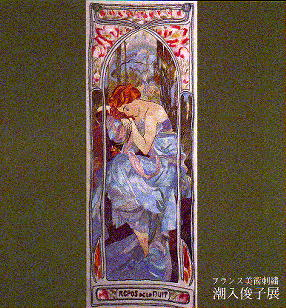
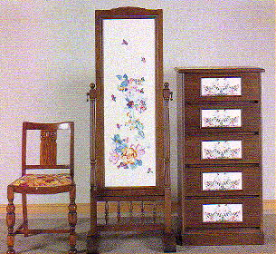
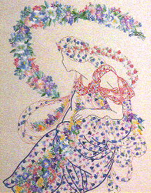

潮入 俊子（しおいり としこ）
高松高校 昭和26年卒業
(Last updated:1998)
プロフィール
| 昭和7年6月 | 香川県高松市で生まれる |
| 昭和26年3月 | 高松高等学校卒業 |
| 昭和41年10月 | 高松・三越にて作品展 |
| 昭和43年11月 | 高松・三越にて作品展 |
| 昭和47年11月 | 大阪心斎橋・日立ホールにて作品展 |
| 昭和50年4月 | 東京プリンスホテル 浦野理一染色デザイナーとジョイント作品展 |
| 昭和52年3月 | 大阪・三越美術ギャラリーにて作品展 |
| 昭和54年5月 | 大阪・三越美術ギャラリーにて作品展 |
| 昭和57年5月 | 東京永田町 料亭「一条」宇野千代、辻村ジュサブロー・ジョイント作品展 |
| 昭和57年8月 | 婦人雑誌「マダム」８月号掲載 |
| 昭和57年11月 | 大阪ロイヤルホテルにて作品展 |
| 昭和60年3月 | 中宮寺、薬師寺お買上(皇室へ献上) |
| 平成元年3月 | 奈良新聞主催 講演「生活と色彩学」 |
| 平成元年12月 | 家庭画報１２月号（美しき着物）帯２点掲載 |
| 平成4年3月 | ＮＨＫ高松にて文化教室講師 |
| 平成4年6月 | 東京上野美術館にて、たぶろう会出典。佳作受賞 |
| 平成5年5月 | 東京上野美術館にて、たぶろう会出典。佳作受賞 |
| 平成5年6月 | ＮＨＫ（高松）ホールにて展示会 ＮＨＫ放映インタビュー |
| 平成5年9月 | 高松・三越にて、バルダ会 展示会 |
| 平成6年6月 | 東京上野美術館にて、たぶろう会出典。会長奨励賞受賞 |
| 平成8年2月 | 薬師寺お買上げ（皇室へ献上） |
| 平成9年10月 | 銀座三越にて作品展 |
作品紹介

額（ミューズ）

左から「椅子」、「姿見」、「五段タンス」

右の刺繍は「額（花のニンフ）」